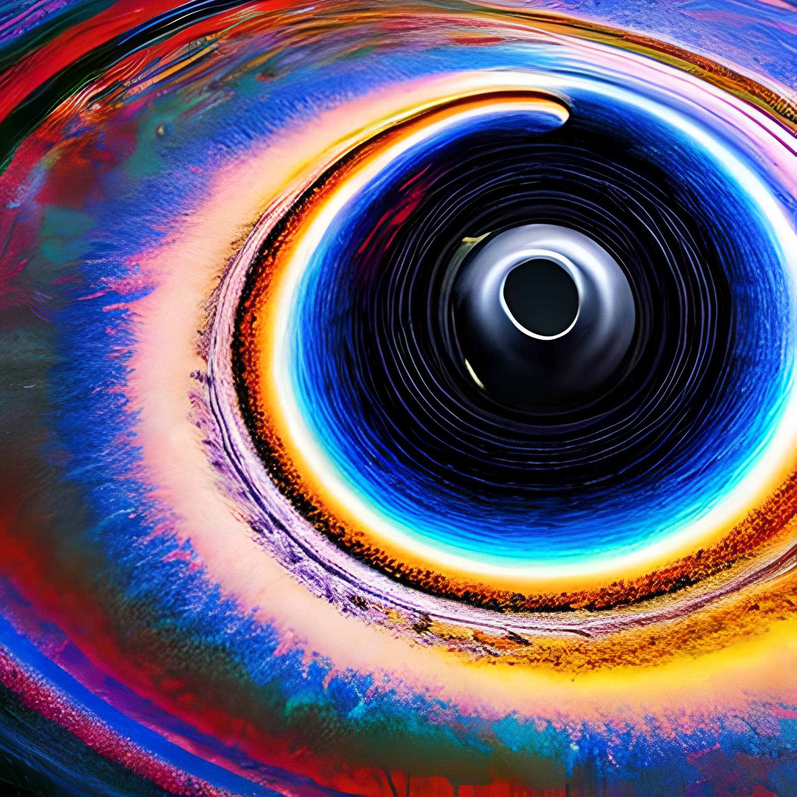

Você já ouviu falar dos buracos negros? Eles são regiões no espaço onde a gravidade é tão intensa que nem mesmo a luz pode escapar. É uma ideia difícil de imaginar, não é mesmo? Mas imagine que eles se formam quando uma estrela morre e seu núcleo entra em colapso, criando um objeto muito, muito denso.
Mas não se preocupe, existem diferentes tamanhos de buracos negros e os não supermassivos são aqueles que têm uma massa menor do que cerca de 100 vezes a massa do Sol. Eles ainda são poderosos, mas não precisamos ter medo deles! Na verdade, podemos aprender muito estudando esses objetos fascinantes.
Os buracos negros não supermassivos podem ser encontrados em galáxias, muitas vezes no centro delas. Eles podem influenciar o movimento das estrelas e do gás ao seu redor, afetando a formação de novas estrelas. É incrível pensar em como esses objetos tão distantes podem ter um impacto tão grande em todo o universo. Espero que tenha gostado de aprender um pouco mais sobre os buracos negros!
| Nome | Massa (Massa Solares) |
|---|---|
| Sagitário A* | Aprox. 4.3 milhoes |
| Messier 87 | Aprox. 6,5 bilhões |
| Cygnus X-1 | Aprox. 14,8 |
| V616 Monocerotis | Aprox. Entre 9 a 13 |
| GRO J1655-40 | Aprox. 5,3 |